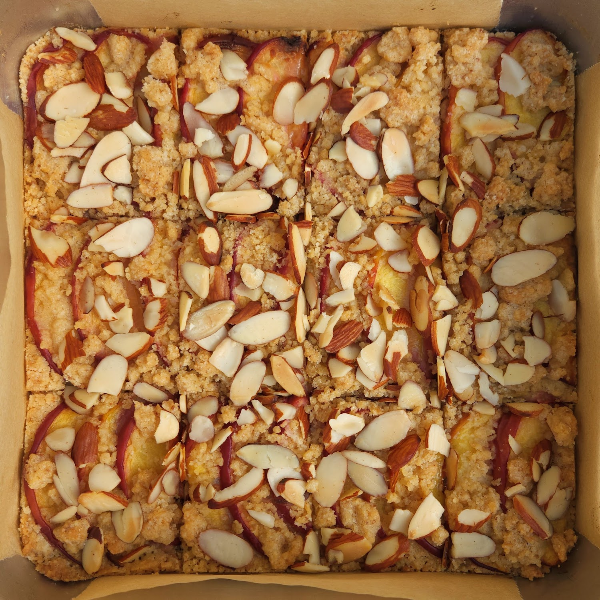

< RECIPES

Peach Shortbread Bars
brown butter hit
Ingredients & Steps
8x8 pan (12 bars)
Line pan with parchment
Roughly mix with a fork
dry ingredients
Mix dry ingredients
Incorporate into wet ingredients to create a crumbly mixture
Press all but 1/4 cup of the mixture into the pan
Preheat oven at 375° (convection : 360°)
Shingle peaches over shortbread base
Sprinkle remaining shortbread mixture
Top with almonds
Bake for 30 minutes, until golden brown
Sources
Smitten KitchenNotes
- Serve warm with ice cream or tea
2016